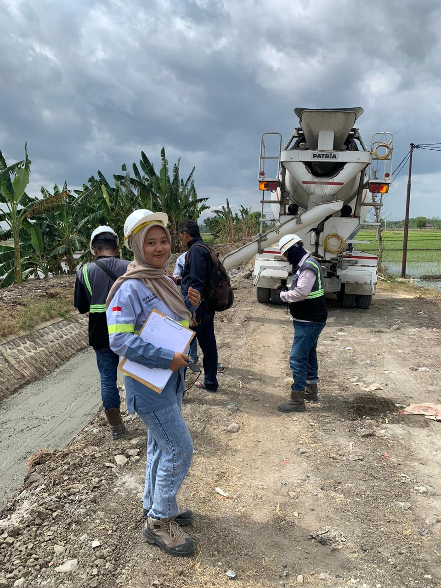
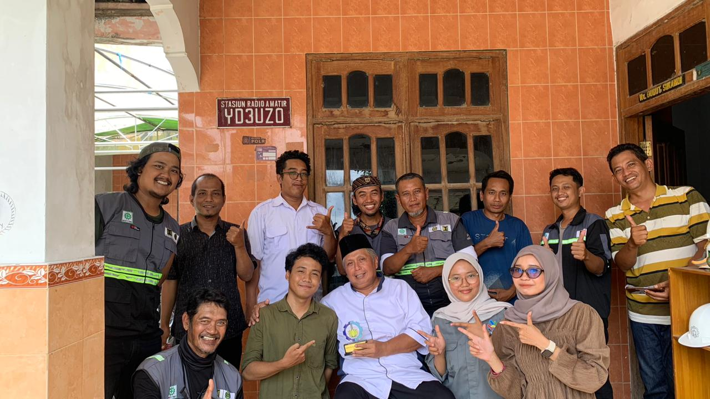
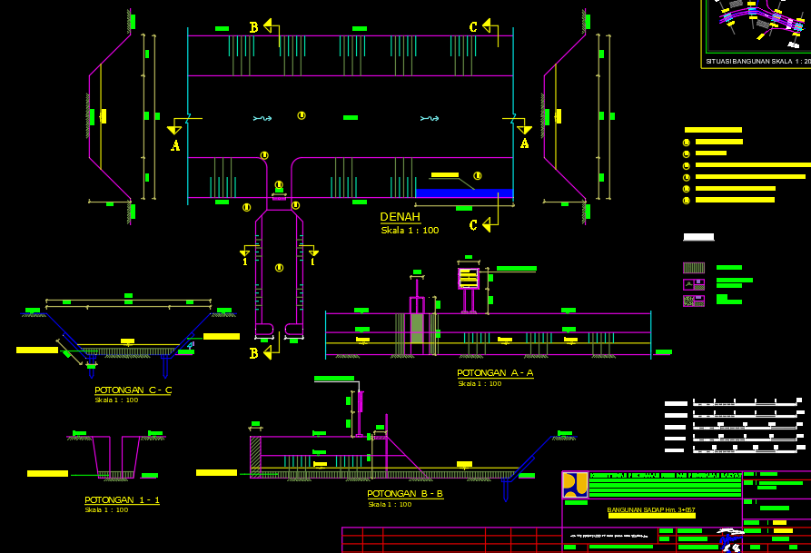

Nadiya El Safira
Fresh Graduate Teknologi Rekayasa Konstruksi Bangunan Air
Institut Teknologi Sepuluh Nopember
IPK: 3,34 / 4,00
Memiliki Pemahaman dalam perencanaan teknis, analisa hidraulika, pemetaan stasial, penggambaran teknik, dan pelaksanaan pekerjaan konstruksi. Terampil menggunakan berbagai engineering software, antara lain AutoCAD, ArcGIS, HEC-RAS, EPANET, SketchUp, GeoStudio, Delft3D, dan Google Earth untuk mendukung kegiatan perencanaan, pemodelan, analisis, serta visualisasi proyek teknik.
Memiliki pengalaman praktik dan magang dalam pekerjaan yang berkaitan dengan irigasi, drainase, infrastruktur sumber daya air, pengolahan data teknis, serta penyusunan dan pembetulan gambar teknik Detail Engineering Design (DED) berdasarkan kondisi aktual lapangan.
Pribadi yang teliti, bertanggung jawab, mudah beradaptasi, mau belajar hal baru, dan siap bekerja di lapangan maupun di lingkungan kantor. Berkomitmen untuk terus mengembangkan kemampuan dan memberikan kontribusi terbaik dalam setiap pekerjaan dan proyek yang dikerjakan.
Experience History
Berikut merupakan kumpulan proyek dan pengalaman praktik selama menempuh pendidikan yang menggambarkan kemampuan dalam bidang teknik sipil dan konstruksi. Memiliki pengalaman dalam perencanaan dan analisis infrastruktur sumber daya air, irigasi, drainase, bangunan pantai, serta perancangan bangunan sederhana, didukung dengan kemampuan pengolahan data teknis dan penyusunan gambar kerja.

Monitoring Lapangan

Team Konsultan

Revisi Gambar
Skills
Software Skills
- AutoCAD
- ArcGIS
- SketchUp
- Delft 3D
- EPANET
- HEC-RAS
- GeoStudio
- Microsoft Excel
- Revit
- MS Project
Personal Skills
- Komunikasi
- Kerja tim
- Problem solving
- Kemampuan Beradaptasi
- Berfikir Kritis
- Koordinasi Lapangan
- Tanggung Jawab
- Adaptasi terhadap kondisi proyek
- Kemampuan analisis
- Observasi lapangan
- Inisiatif tinggi
Contact
Email: nadiyata23@gmail.com
WhatsApp: 081252146034
LinkedIn: linkedin.com/in/Nadiya-El-Safira